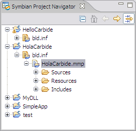
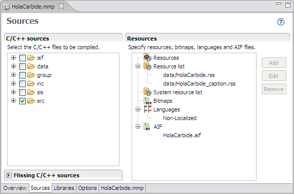
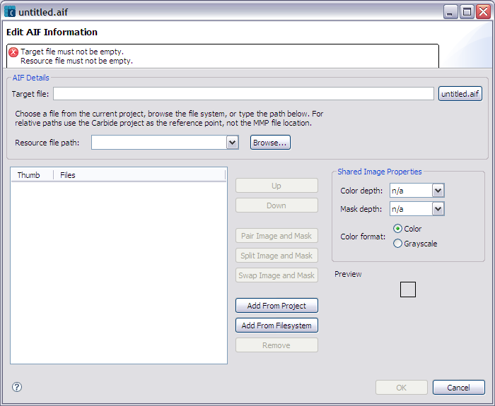

To create an AIF file
-
Open the MMP file associated with the project in the Symbian Project Navigator (double-click on MMP file or right-click and select Open).

- The MMP editor opens.
- Select the Sources tab and select AIF in the Resources group.
- Click Add button to open the AIF editor.
- Enter a name for the .aif file or click untitled.aif button to set a default name based on the SDK and project name.
- Specify a resource file from the dropdown list or browse the filesystem.
- Click the Add From Project or Add From Filesystem buttons to add image and mask bitmaps.
- Set the Shared Image Properties (color depth, mask depth, and color format).
- Select the two images (image and mask) and select Pair Image and Mask button.
- Click Ok to create AIF file from the information you defined in the editor.
Figure 1 - MMP File in Symbian Project Navigator

Figure 2 - Access to AIF Editor in MMP Editor

Figure 3 - AIF Editor

Figure 4- AIF Editor with information defined